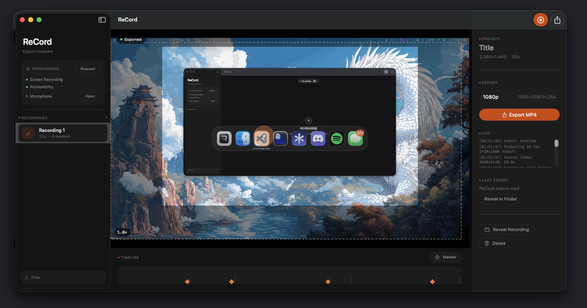
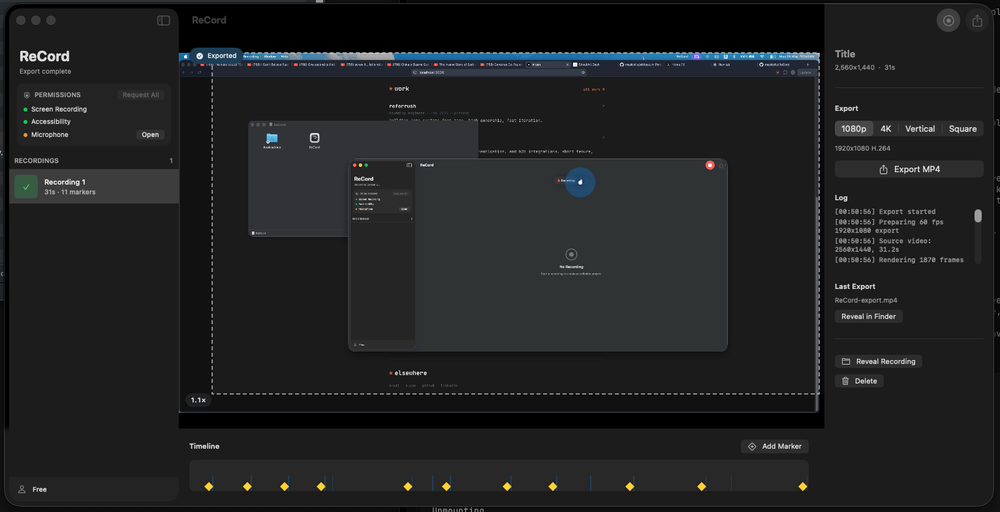

ReCord automatically zooms and follows your cursor while you record. No manual editing. Just capture, export, and share cinematic footage in seconds.
Every click becomes a cinematic moment. ReCord handles zooms, camera movement, and cursor tracking so you can focus on what you're showing.

ReCord detects every mouse click during recording and drops a smooth zoom keyframe at that moment. The viewport gently ramps in, holds for context, then gracefully ramps back out. You never miss the action, and you never touch a timeline.

During active zooms, the viewport drifts with your cursor like a trained operator. Configurable smoothness prevents violent shaking from fast mouse movements, so your footage feels intentionally cinematic, not accidental.
No timeline editing. No keyframe animation. Three steps from screen capture to cinematic MP4.
Pick your screen or window and hit Record. ReCord hides the native cursor from capture and tracks it independently for perfect compositing later.
Your recording appears instantly in the dark editor. Drag zoom keyframes on the timeline, add manual markers, and watch the live preview with the viewport overlay.
Hit Export. ReCord post-processes every frame with Core Image — crops to the animated viewport, scales to 1080p, composites the system cursor, and writes a clean MP4.
macOS may show a security warning when you open ReCord for the first time. This is expected for apps distributed outside the Mac App Store.
Click the Download button above to get ReCord.dmg (~450 KB). Open the file once it finishes downloading.
In the disk image window, drag the ReCord icon into your Applications folder.
Don't double-click. Right-click (or Control-click) the ReCord app in Applications, then select "Open". Click "Open" again in the dialog. You won't see this warning again.
When prompted, allow Screen Recording and Accessibility access so ReCord can capture your screen and track your cursor.
ReCord is currently ad-hoc signed, which means macOS Gatekeeper shows a warning on first launch. This is normal for independent macOS apps before they are notarized by Apple. All processing happens locally on your Mac — no cloud upload, no telemetry, no tracking.